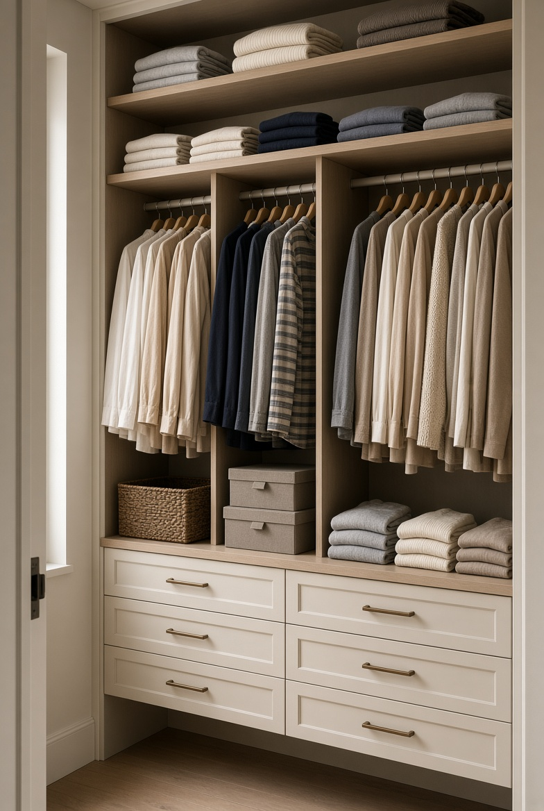

En este artículo
Prioriza una cama realmente cómoda
En un dormitorio de invitados, la cama es el elemento que más influye en la experiencia de quien se queda. No es necesario comprar el mobiliario más caro, pero sí conviene prestar atención al colchón, la almohada y la ropa de cama. Una habitación visualmente bonita pierde buena parte de su valor si la persona no puede descansar bien.
No olvides las almohadas
Una o dos opciones de almohada pueden resultar más útiles que acumular elementos decorativos. La idea es que el huésped pueda elegir una altura y firmeza que le resulten cómodas.
Elige una cama proporcional al tamaño de la habitación y deja espacio suficiente para circular alrededor. Si el cuarto es pequeño, una cama demasiado grande puede bloquear armarios o dificultar el acceso. Cuando sea posible, coloca la cama de forma que el huésped pueda entrar y salir cómodamente sin tener que mover otros muebles.
La ropa de cama debe ser limpia, agradable al tacto y adecuada para la temperatura del lugar. Tener una manta adicional disponible es una solución sencilla que permite adaptarse a diferentes preferencias sin llenar la habitación de textiles.
Deja espacio para las pertenencias del huésped
Una habitación de invitados funcional no debería obligar a dejar la maleta en medio del suelo. Incluso cuando el espacio es pequeño, conviene reservar un lugar donde guardar ropa y objetos personales. Puede ser un cajón libre, una parte del armario, un perchero o una superficie donde colocar una bolsa.
Menos objetos, más utilidad
No necesitas llenar el dormitorio con muebles. Un armario o cajonera bien elegidos, una mesa auxiliar y un lugar para colgar ropa pueden ser suficientes para una estancia cómoda.
Antes de la llegada, revisa que los compartimentos destinados al huésped estén realmente vacíos. Es habitual utilizar una habitación secundaria como almacén, pero si quieres que funcione como dormitorio de invitados, es mejor retirar temporalmente los objetos que no tienen relación con la estancia.

Una pequeña superficie junto a la cama también resulta útil. Una mesita permite colocar un teléfono, un libro, unas gafas o una botella de agua sin ocupar la cama o el suelo.
Cuida la iluminación
La iluminación debería permitir distintas situaciones. Una luz general ayuda a desplazarse por la habitación, mientras que una lámpara cercana a la cama facilita leer o descansar sin iluminar todo el espacio. Si existe luz natural, procura que las cortinas puedan abrirse y cerrarse con facilidad.
Piensa en la noche
Comprueba la habitación con las luces principales apagadas. Si existen zonas completamente oscuras o interruptores difíciles de encontrar, puedes mejorar la experiencia con una pequeña luz auxiliar.
Las lámparas de noche deben estar colocadas de manera accesible. El huésped no debería tener que levantarse de la cama para buscar un interruptor. También conviene evitar una iluminación excesivamente intensa que haga que la habitación resulte poco relajante durante la noche.
Cuando el dormitorio recibe mucha luz exterior por la mañana, unas cortinas adecuadas pueden mejorar el descanso. Lo importante es permitir que el huésped controle la cantidad de luz que entra, especialmente si tiene horarios diferentes a los de la casa.
Añade detalles que hagan sentir al huésped bienvenido
Los pequeños detalles pueden convertir una habitación correcta en un espacio acogedor. Una botella de agua, toallas limpias, una manta adicional y un lugar claro donde dejar las pertenencias transmiten organización sin necesidad de gastar mucho dinero. La clave es anticipar las necesidades habituales de una persona que no conoce la casa.

Prepara una pequeña zona de bienvenida
Un espacio despejado con agua, una toalla y quizá una pequeña bandeja puede ser más útil que muchos adornos. La comodidad nace de la facilidad de uso.
También puedes dejar información básica sobre la vivienda. Una nota sencilla con la contraseña de internet, la ubicación del baño o algunas indicaciones prácticas evita preguntas innecesarias y permite que el huésped se sienta más independiente.
La decoración debería ser agradable pero equilibrada. Colores neutros, algunos textiles y uno o dos elementos decorativos pueden ser suficientes. Evita llenar las superficies con objetos que el huésped tenga que mover para utilizar la habitación.
Cuida la privacidad y la temperatura
Un buen dormitorio de invitados debe ofrecer sensación de privacidad. Si la habitación tiene una ventana que da directamente a una zona de paso, las cortinas o persianas deberían permitir controlar la visibilidad. La persona que se aloja necesita poder descansar sin sentir que está expuesta al resto de la vivienda.
Haz una prueba como huésped
Pasa unos minutos en la habitación y pregúntate qué necesitarías si fuera tu primera noche allí. Esa pequeña prueba suele revelar problemas de iluminación, almacenamiento, temperatura o privacidad.
La temperatura también merece atención. Revisa que las ventanas cierren correctamente, que la ventilación funcione y que exista alguna solución para las noches frías o calurosas. Una manta adicional, un ventilador cuando sea apropiado o instrucciones sencillas para utilizar el sistema de climatización pueden marcar una diferencia importante.

No hace falta transformar el dormitorio en un hotel. Basta con pensar en las situaciones básicas que podrían incomodar a alguien que no conoce la casa y resolverlas antes de que llegue.
Consejos adicionales
El almacenamiento puede ser especialmente importante cuando los huéspedes permanecen varios días. Una persona que solo pasa una noche probablemente necesitará poco espacio, pero una estancia más larga requiere poder organizar ropa, objetos personales y equipaje. Unos cuantos cajones libres y un tramo de barra para perchas pueden marcar una diferencia considerable sin ocupar demasiado espacio.
La temperatura y la ventilación deben comprobarse antes de la llegada. Abre las ventanas, revisa las cortinas y comprueba que el sistema de climatización funcione correctamente si existe. También es conveniente informar al huésped de cualquier particularidad, como una ventana que deba mantenerse cerrada en determinadas condiciones o un aparato que tenga un modo específico de funcionamiento.
El objetivo final es que la persona pueda utilizar la habitación sin tener que preguntar dónde está cada cosa. Cuanto más intuitiva sea la distribución, más cómoda será la estancia. Una habitación funcional no llama la atención por la cantidad de elementos que contiene, sino porque todo parece estar en el lugar correcto cuando se necesita.
Si la habitación también debe funcionar como espacio cotidiano, intenta que los muebles puedan cumplir más de una función. Un escritorio pequeño puede servir como superficie de apoyo, mientras que una cama con almacenamiento inferior puede resolver parte de las necesidades de organización. La versatilidad permite mantener el cuarto útil durante todo el año sin convertirlo en un espacio exclusivamente reservado para visitas.
Antes de la llegada, revisa también los pequeños elementos que suelen olvidarse: enchufes accesibles, perchas suficientes, papelera, espejo y un lugar para dejar el teléfono. Son detalles sencillos, pero eliminan pequeñas incomodidades y hacen que el huésped pueda instalarse con mayor autonomía.
Preguntas frecuentes
¿Qué debe tener como mínimo un dormitorio de invitados?
Una cama cómoda, ropa de cama limpia, iluminación suficiente, un lugar para guardar o colgar algunas pertenencias y espacio para circular. Los detalles adicionales dependen del tamaño y de las necesidades de la vivienda.
¿Cómo organizar un dormitorio de invitados pequeño?
Prioriza la cama y la circulación, utiliza almacenamiento vertical cuando sea posible y evita muebles que tengan una función poco clara. Un espacio despejado suele resultar más cómodo que una habitación llena.
¿Conviene dejar objetos decorativos?
Sí, pero con moderación. Unos pocos elementos pueden aportar personalidad, mientras que demasiados objetos ocupan superficies que el huésped podría necesitar.
Conclusión
Un dormitorio de invitados funcional no necesita muchos muebles ni una decoración costosa. Necesita, sobre todo, estar pensado desde el punto de vista de quien va a utilizarlo. Una cama cómoda, espacio para las pertenencias, buena iluminación, privacidad y algunos detalles prácticos son suficientes para crear una habitación agradable. Si además preparas el espacio antes de la llegada y dejas claras las pequeñas instrucciones de la casa, el huésped podrá instalarse con facilidad y disfrutar de una estancia mucho más cómoda.